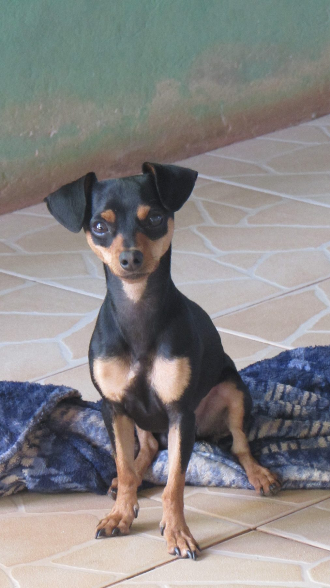
Bilbo 🐶
Cachorros são a maior paixão da minha vida. O Bilbo é o meu amor todo, e eu amo todos os bichinhos.
Estudante de Análise e Desenvolvimento de Sistemas, apaixonada por dados, games, música e cachorros.
Conheça minha história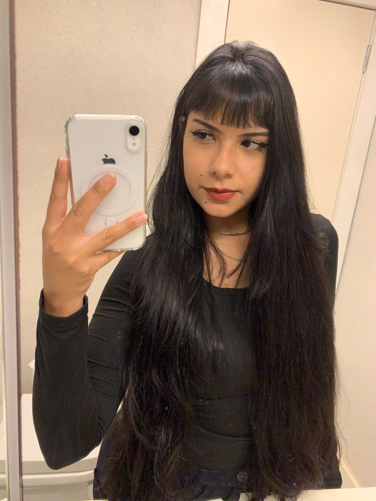
Tenho 23 anos e curso Análise e Desenvolvimento de Sistemas. Dentro da tecnologia, é a área de dados que mais me encanta, e é nela que quero me especializar.
Clique no botão para descobrir uma curiosidade sobre mim.

Cachorros são a maior paixão da minha vida. O Bilbo é o meu amor todo, e eu amo todos os bichinhos.
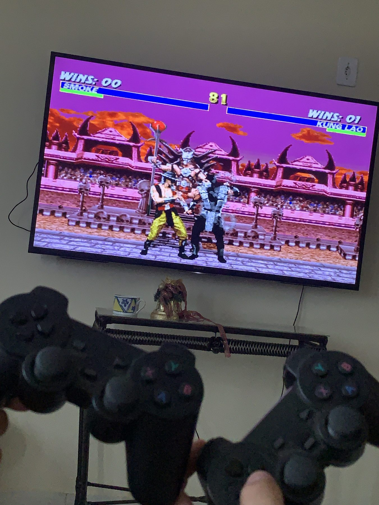
Video game, PC e jogos de tabuleiro: se tem diversão, eu estou dentro.
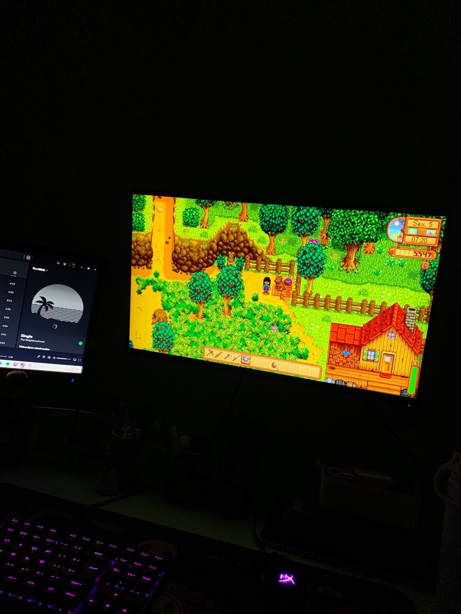
Meu vício do momento! Plantar, cuidar da fazenda e fazer amizades no vilarejo é o meu cantinho de paz.
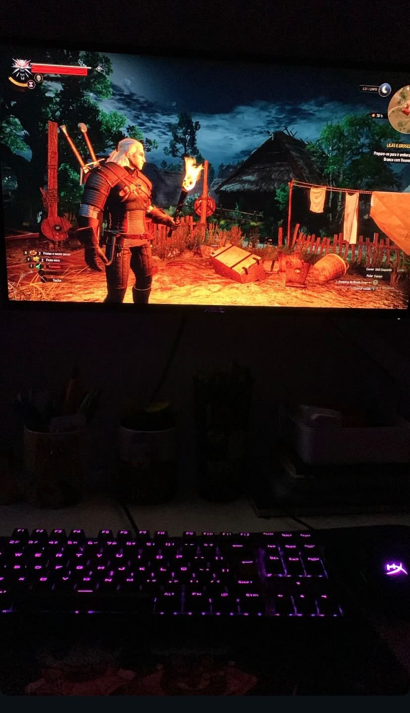
Adoro jogos de modo história, e The Witcher 3 é um dos meus preferidos.
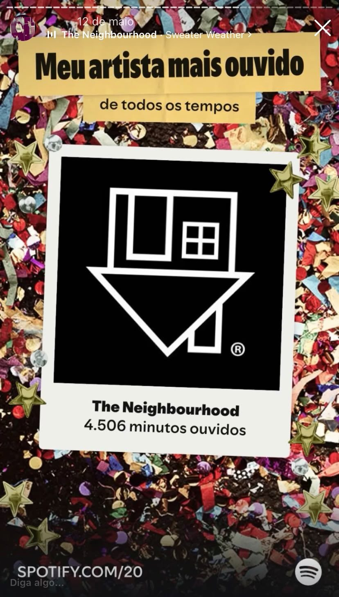
Minha banda favorita! Ano que vem vou ao Lollapalooza para vê-los ao vivo, e já estou ansiosa.
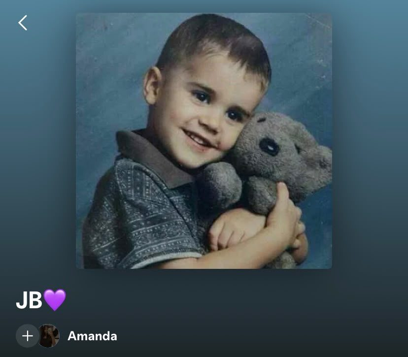
Meu cantor favorito, com músicas que fazem parte da minha trilha sonora.
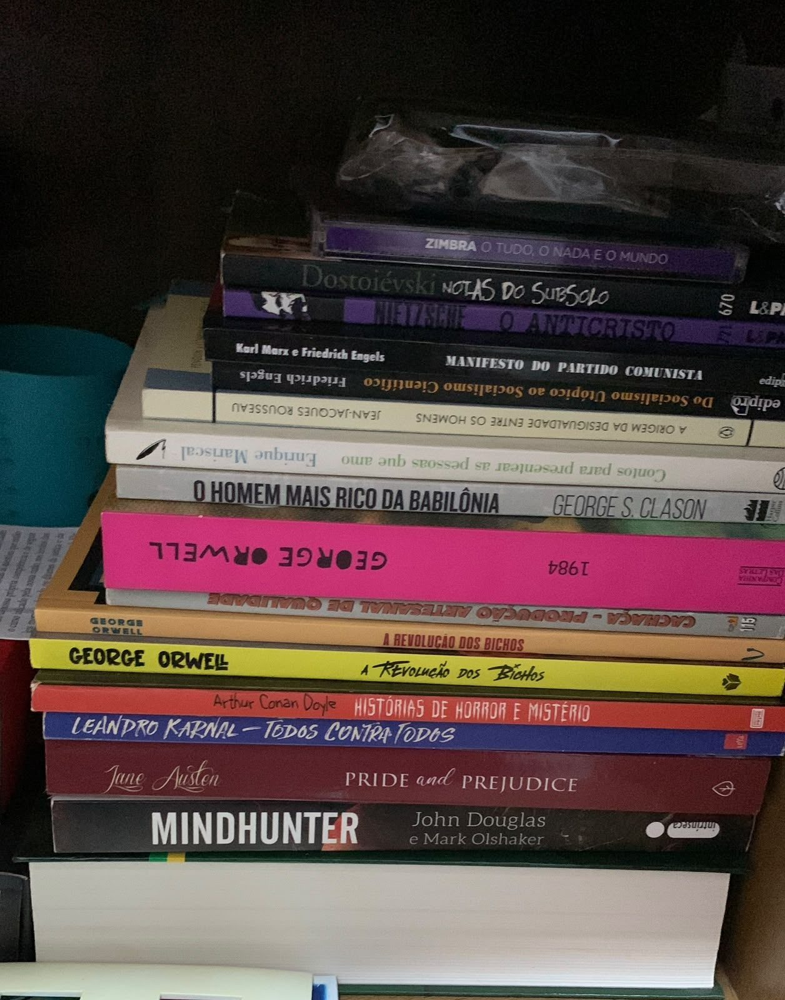
Leio de tudo um pouco: ficção, história, política, economia, filosofia e o que mais me despertar curiosidade.
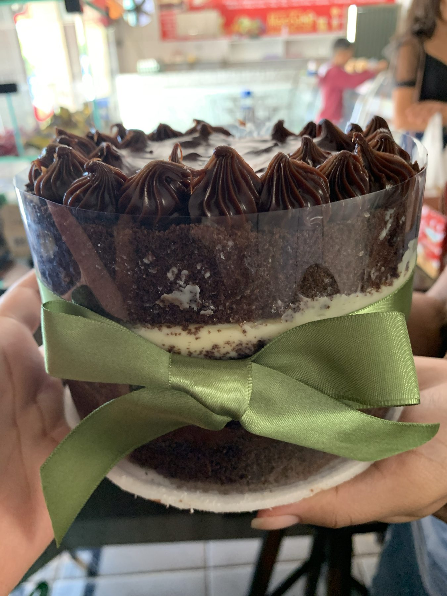
Cozinhar é um dos meus prazeres, principalmente bolos e doces. Fazer uma receita nova é sempre uma aventura.
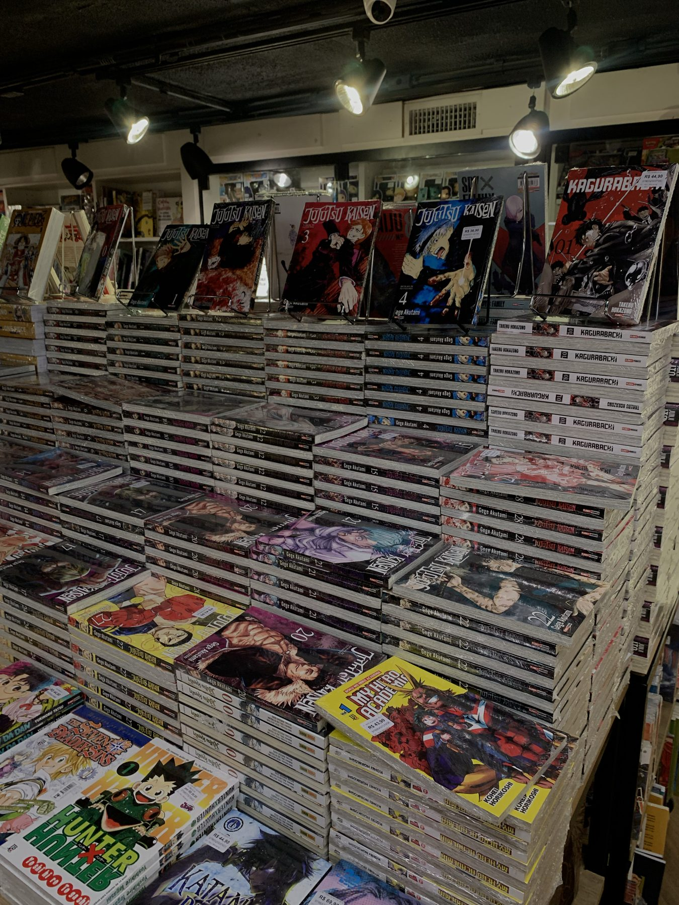
Assisto anime e leio mangá. Meu favorito é Hunter x Hunter.
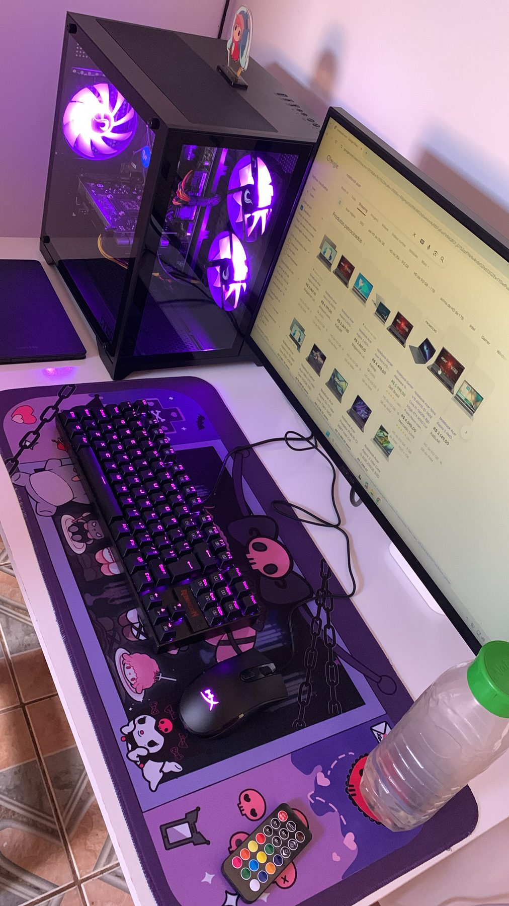
A Kuromi, da Sanrio, é a inspiração do visual deste site.
Meus projetos ficam no GitHub. Em breve, os destaques aparecem aqui.
Ver meu GitHubVamos conversar? Me encontre nas redes profissionais.